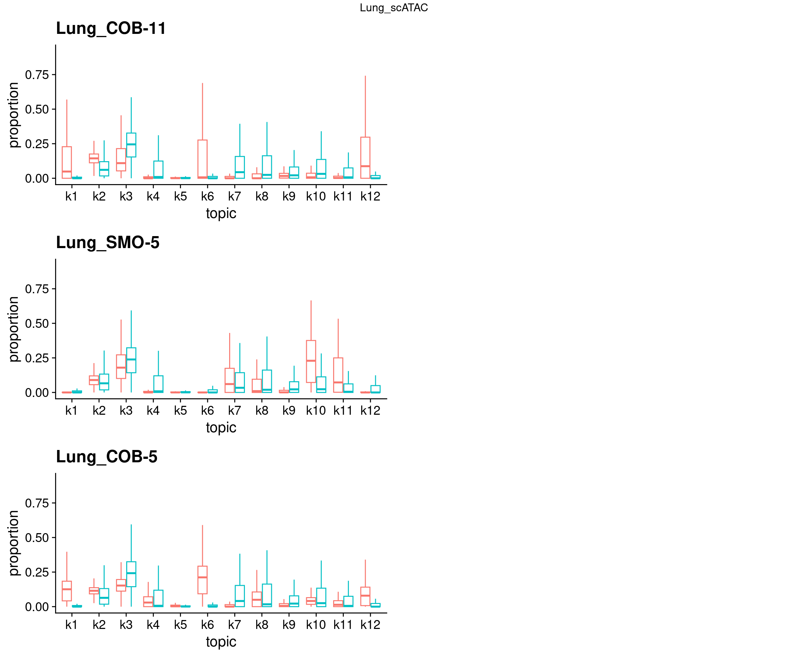
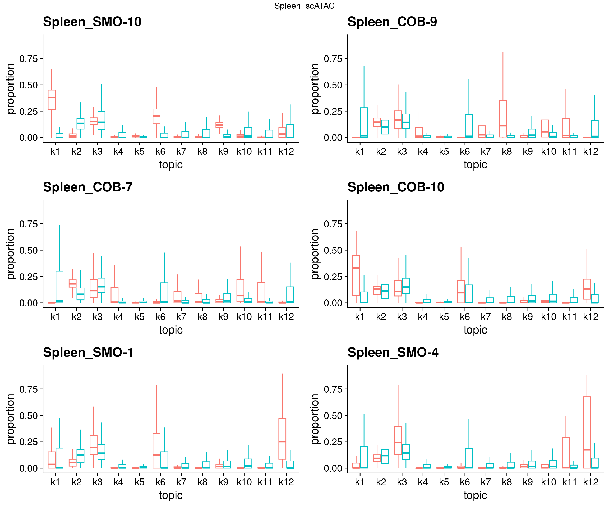
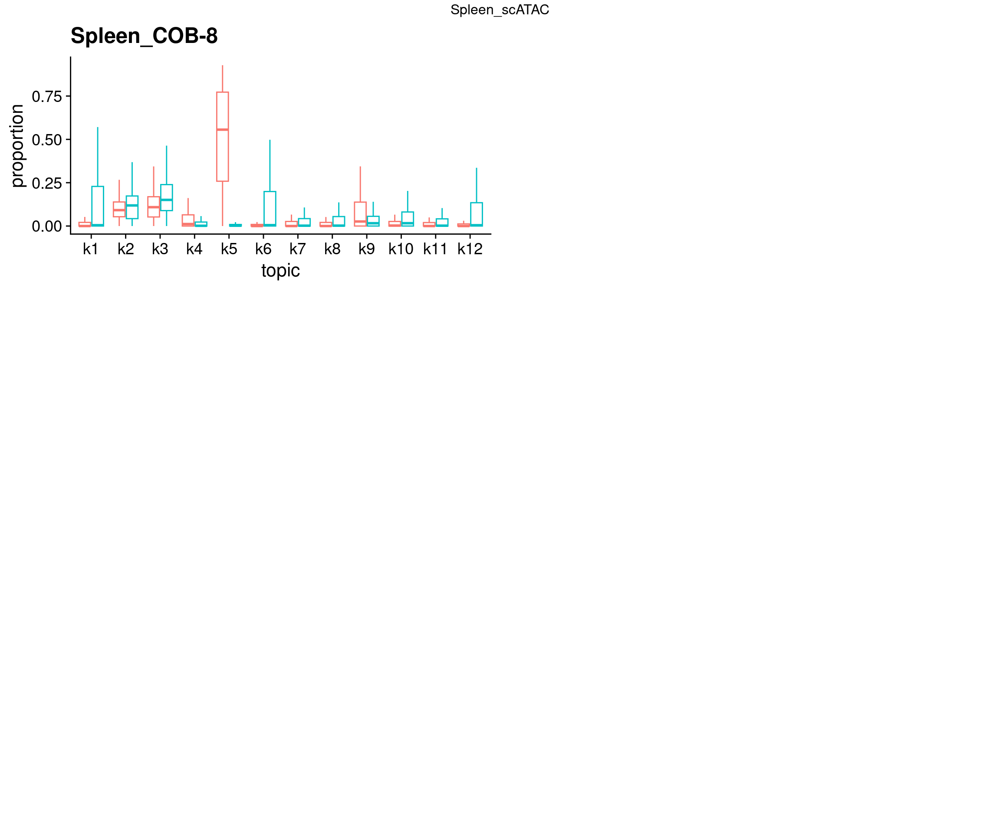

Identify batch effects on the full scATAC-seq dataset
2025-01-29
Last updated: 2025-01-29
Checks: 7 0
Knit directory: lung_lymph_scMultiomics/
This reproducible R Markdown analysis was created with workflowr (version 1.7.1). The Checks tab describes the reproducibility checks that were applied when the results were created. The Past versions tab lists the development history.
Great! Since the R Markdown file has been committed to the Git repository, you know the exact version of the code that produced these results.
Great job! The global environment was empty. Objects defined in the global environment can affect the analysis in your R Markdown file in unknown ways. For reproduciblity it’s best to always run the code in an empty environment.
The command set.seed(20221229) was run prior to running
the code in the R Markdown file. Setting a seed ensures that any results
that rely on randomness, e.g. subsampling or permutations, are
reproducible.
Great job! Recording the operating system, R version, and package versions is critical for reproducibility.
Nice! There were no cached chunks for this analysis, so you can be confident that you successfully produced the results during this run.
Great job! Using relative paths to the files within your workflowr project makes it easier to run your code on other machines.
Great! You are using Git for version control. Tracking code development and connecting the code version to the results is critical for reproducibility.
The results in this page were generated with repository version 3979551. See the Past versions tab to see a history of the changes made to the R Markdown and HTML files.
Note that you need to be careful to ensure that all relevant files for
the analysis have been committed to Git prior to generating the results
(you can use wflow_publish or
wflow_git_commit). workflowr only checks the R Markdown
file, but you know if there are other scripts or data files that it
depends on. Below is the status of the Git repository when the results
were generated:
Ignored files:
Ignored: analysis/.RData
Ignored: analysis/.Rhistory
Untracked files:
Untracked: analysis/.ipynb_checkpoints/
Untracked: analysis/ArchRLogs/
Untracked: analysis/GOBP_B_CELL_ACTIVATION_INVOLVED_IN_IMMUNE_RESPONSE.v2024.1.Hs.gmt
Untracked: analysis/cross_tissue_DE_u19_k10_fastTopics.Rmd
Untracked: analysis/differential_peak_analysis.Rmd
Untracked: analysis/identify_T_subsets.Rmd
Untracked: analysis/identify_batch_effects_full_atac_k8.Rmd
Untracked: analysis/run_fastTopics.R
Untracked: analysis/run_fastTopics_lungOnly.R
Untracked: analysis/test.pdf
Untracked: analysis/test_GO_enrichment.ipynb
Untracked: analysis/u19_atac_fastTopics.Rmd
Untracked: analysis/u19_full_atac_fastTopics.Rmd
Untracked: analysis/u19_full_atac_fastTopics_k10.Rmd
Untracked: analysis/u19_full_atac_fastTopics_k8.Rmd
Untracked: analysis/u19_lung_atac_fastTopics_no_correction.Rmd
Untracked: analysis/u19_regulon_enrichment.Rmd
Untracked: analysis/ukb-a-446.log
Untracked: analysis/ukb-a-446_GO_immune.log
Untracked: code/.ipynb_checkpoints/
Untracked: code/make_plots.R
Untracked: code/run_GO_enrichment.R
Untracked: code/run_fastTopics.R
Untracked: code/run_magma.sh
Untracked: code/run_magma/
Untracked: code/run_topic_DE_analysis.R
Untracked: data/DA_peaks_Tsub_vs_others.RDS
Untracked: data/DA_peaks_by_cell_type.RDS
Untracked: data/TF_target_sizes_GRN.txt
Untracked: data/Tsuo2022_meta_analysis_asthma_risk_genes.csv
Untracked: data/U19_T_cell_peaks_metadata.RDS
Untracked: data/Wang_2020_T_cell_peaks_metadata.RDS
Untracked: data/annotated_scRNA_data.RDS
Untracked: data/lung_GRN_CD4_T_edges.txt
Untracked: data/lung_GRN_CD8_T_edges.txt
Untracked: data/lung_GRN_Th17_edges.txt
Untracked: data/lung_GRN_Treg_edges.txt
Untracked: output/annotation_reference.txt
Untracked: output/fastTopics
Untracked: output/homer
Untracked: output/ldsc_enrichment
Untracked: output/lung_immune_atac_peaks_high_ePIPs.RDS
Untracked: output/no_bkg/
Untracked: output/positions.bed
Untracked: output/topic3/
Untracked: output/u19_output
Untracked: test.pdf
Unstaged changes:
Modified: analysis/U19_motif_analysis.ipynb
Modified: analysis/cross_tissue_DE_u19_fastTopics.Rmd
Modified: analysis/gene_set_analysis_for_RNA_topics.Rmd
Modified: analysis/identify_regulatory_programs_u19_GRN.Rmd
Modified: analysis/rank_TFs_from_pairwise_comparison.ipynb
Deleted: analysis/test_magma.Rmd
Modified: analysis/u19_h2g_enrichment.Rmd
Modified: analysis/u19_lung_atac_fastTopics.Rmd
Deleted: code/run_fastTopic.R
Deleted: lung_immune_fine_mapping.Rproj
Note that any generated files, e.g. HTML, png, CSS, etc., are not included in this status report because it is ok for generated content to have uncommitted changes.
These are the previous versions of the repository in which changes were
made to the R Markdown
(analysis/identify_batch_effects_full_atac.Rmd) and HTML
(docs/identify_batch_effects_full_atac.html) files. If
you’ve configured a remote Git repository (see
?wflow_git_remote), click on the hyperlinks in the table
below to view the files as they were in that past version.
| File | Version | Author | Date | Message |
|---|---|---|---|---|
| html | 3979551 | Jing Gu | 2025-01-29 | Build site. |
| Rmd | 9e9d392 | Jing Gu | 2025-01-29 | identified batch effects in full ATAC-seq |
| html | a9d6863 | Jing Gu | 2025-01-21 | Build site. |
| Rmd | 710e6c4 | Jing Gu | 2025-01-21 | updated batch effects for full ATAC |
| html | db57d00 | Jing Gu | 2025-01-20 | Build site. |
| Rmd | a072821 | Jing Gu | 2025-01-20 | identified batch effects in topics |
Objective
By running topic models on the full scATAC-seq data, we aim to identify batch effects and compare them with those from the matched sc-multiomics datasets. The topic model for the data set has 12 topics, and these topics vary in proportion across cell types, which have been previously defined by marker gene expression based on scRNA-seq data.
[1] "check whether L matrix has the same order as metadata: "[1] TRUEBatch information
Samples are matched for tissues across batches: at least one lung and one spleen in each batch
Batch 1 and 2 have only control samples, but the rest have both case and control samples.
batch2 batch3 batch4 batch5 batch1
Lung_COB-11 0 0 0 5275 0
Lung_COB-5 0 0 3000 0 0
Lung_COB-6 0 0 9523 0 0
Lung_SMO-2 0 0 0 0 5908
Lung_SMO-3 0 0 0 0 9816
Lung_SMO-5 2996 0 0 0 0
Lung_SMO-7 9172 0 0 0 0
Lung_SMO-8 0 8068 0 0 0
Lung_SMO-9 0 6432 0 0 0
Spleen_COB-10 0 0 0 4352 0
Spleen_COB-7 0 0 10486 0 0
Spleen_COB-8 0 0 3933 0 0
Spleen_COB-9 0 0 0 8609 0
Spleen_SMO-1 0 0 0 0 4419
Spleen_SMO-10 0 7313 0 0 0
Spleen_SMO-4 2975 0 0 0 0
batch2 batch3 batch4 batch5 batch1
case_COB-10 0 0 0 4352 0
case_COB-11 0 0 0 5275 0
case_COB-5 0 0 3000 0 0
case_COB-7 0 0 10486 0 0
case_SMO-8 0 8068 0 0 0
control_COB-6 0 0 9523 0 0
control_COB-8 0 0 3933 0 0
control_COB-9 0 0 0 8609 0
control_SMO-1 0 0 0 0 4419
control_SMO-10 0 7313 0 0 0
control_SMO-2 0 0 0 0 5908
control_SMO-3 0 0 0 0 9816
control_SMO-4 2975 0 0 0 0
control_SMO-5 2996 0 0 0 0
control_SMO-7 9172 0 0 0 0
control_SMO-9 0 6432 0 0 0Strctural plots
- full scATAC-seq datasets (102277 cells)
- peak matrix with a union set of peaks called from each tissue and cell-type pair
- 250K peaks in total

Distribution of topic proportions across batches
Topic proportions by batches
Lung:
- k6 - COB-5 from batch 4
- k9 - SMO-8/9 from batch 3
- k12 - COB-5/6 from batch 4, COB-11 from batch 5
Spleen:
- k1 - SMO-10 from batch 3, COB-10 from batch 5
- k6 - SMO-10 from batch 3, SMO-1 from batch 1, COB-10 from batch 5
- k9 - SMO-10 from batch 3
- k12 - SMO-1 from batch 1 and SMO-4 from batch 2
Topic proportion by donors
Comparing each donor sample with the rest of donor samples separately for each tissue
Case samples: COB-5, 7, 10, 11 and SMO-8



Correct batch effects by removing samples
After removing SMO-1/10 sample, we have no batch 3 and less batch effects in spleens.
R version 4.2.0 (2022-04-22)
Platform: x86_64-pc-linux-gnu (64-bit)
Running under: CentOS Linux 7 (Core)
Matrix products: default
BLAS/LAPACK: /software/openblas-0.3.13-el7-x86_64/lib/libopenblas_haswellp-r0.3.13.so
locale:
[1] LC_CTYPE=en_US.UTF-8 LC_NUMERIC=C LC_TIME=C
[4] LC_COLLATE=C LC_MONETARY=C LC_MESSAGES=C
[7] LC_PAPER=C LC_NAME=C LC_ADDRESS=C
[10] LC_TELEPHONE=C LC_MEASUREMENT=C LC_IDENTIFICATION=C
attached base packages:
[1] grid stats graphics grDevices utils datasets methods
[8] base
other attached packages:
[1] gridExtra_2.3 circlize_0.4.15 ComplexHeatmap_2.14.0
[4] colorRamp2_0.1.0 tidyr_1.3.1 dplyr_1.1.4
[7] poolr_1.1-1 cowplot_1.1.3 ggplot2_3.5.1
[10] fastTopics_0.6-193 Matrix_1.6-5 workflowr_1.7.1
loaded via a namespace (and not attached):
[1] matrixStats_1.1.0 fs_1.6.5 RColorBrewer_1.1-3
[4] doParallel_1.0.17 progress_1.2.3 httr_1.4.7
[7] rprojroot_2.0.4 tools_4.2.0 bslib_0.8.0
[10] R6_2.5.1 irlba_2.3.5.1 BiocGenerics_0.44.0
[13] uwot_0.2.2 lazyeval_0.2.2 colorspace_2.1-1
[16] GetoptLong_1.0.5 withr_3.0.2 tidyselect_1.2.1
[19] prettyunits_1.2.0 processx_3.8.4 compiler_4.2.0
[22] git2r_0.33.0 cli_3.6.3 plotly_4.10.4
[25] labeling_0.4.3 sass_0.4.9 scales_1.3.0
[28] SQUAREM_2021.1 quadprog_1.5-8 callr_3.7.3
[31] pbapply_1.7-2 mixsqp_0.3-54 stringr_1.5.1
[34] digest_0.6.37 rmarkdown_2.29 RhpcBLASctl_0.23-42
[37] pkgconfig_2.0.3 htmltools_0.5.8.1 fastmap_1.2.0
[40] invgamma_1.1 htmlwidgets_1.6.4 rlang_1.1.4
[43] GlobalOptions_0.1.2 rstudioapi_0.17.1 farver_2.1.2
[46] shape_1.4.6 jquerylib_0.1.4 generics_0.1.3
[49] jsonlite_1.8.9 gtools_3.9.5 magrittr_2.0.3
[52] S4Vectors_0.36.2 Rcpp_1.0.13-1 munsell_0.5.1
[55] lifecycle_1.0.4 stringi_1.8.4 whisker_0.4.1
[58] yaml_2.3.10 mathjaxr_1.6-0 Rtsne_0.17
[61] parallel_4.2.0 promises_1.3.2 ggrepel_0.9.6
[64] crayon_1.5.3 lattice_0.22-6 hms_1.1.3
[67] knitr_1.49 ps_1.8.1 pillar_1.10.0
[70] rjson_0.2.23 stats4_4.2.0 codetools_0.2-20
[73] glue_1.8.0 evaluate_1.0.1 getPass_0.2-2
[76] data.table_1.16.4 RcppParallel_5.1.9 vctrs_0.6.5
[79] png_0.1-8 httpuv_1.6.15 foreach_1.5.2
[82] gtable_0.3.6 purrr_1.0.2 clue_0.3-66
[85] ashr_2.2-63 cachem_1.1.0 xfun_0.49
[88] later_1.4.1 viridisLite_0.4.2 truncnorm_1.0-9
[91] tibble_3.2.1 iterators_1.0.14 IRanges_2.32.0
[94] cluster_2.1.8